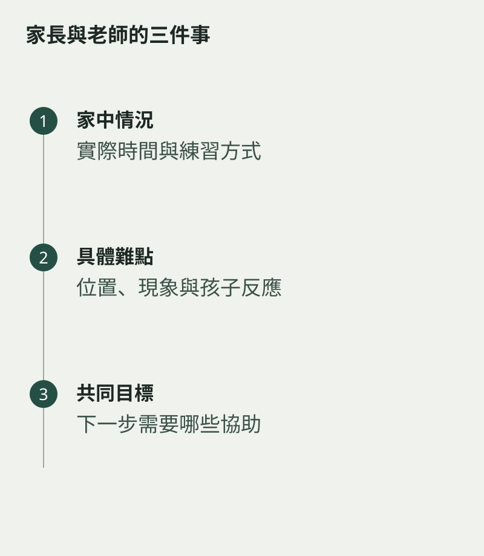

想了解孩子學得如何，不一定要每次問「有沒有進步」。可以帶三件具體事情與老師談：家中練習怎樣進行、孩子在哪裏卡住，以及下一階段最值得協助甚麼。對話有了實際位置，較容易形成共同安排。
先說觀察，不急着下判斷。例如「每次練到第二行便停」比「他沒有耐性」更容易討論，因為原因可能是節奏、指法或任務太大。
把家庭時間說清楚
若一星期只有幾個短時段能練，直接告訴老師，讓任務配合現實。不要為了顯得努力而答應不可能維持的安排，之後再由孩子承受落差。
課後可確認最重要的一兩項練習，以及家長需要觀察的標準。若家長不懂音樂，可以請老師用能聽、能看見的方式解釋，不必把專業名詞全部背下來。

讓孩子也參與
適合時請孩子說一件自己想學、想改善或覺得困難的事。家長與老師的對話不應只在孩子頭上進行，讓學生參與，目標才較容易成為自己的事情。
定期簡短回看，比累積很多疑問後一次質問更容易合作。好的溝通，是讓家中和課堂知道彼此正在做甚麼，孩子便不必在兩個不同方向之間來回。